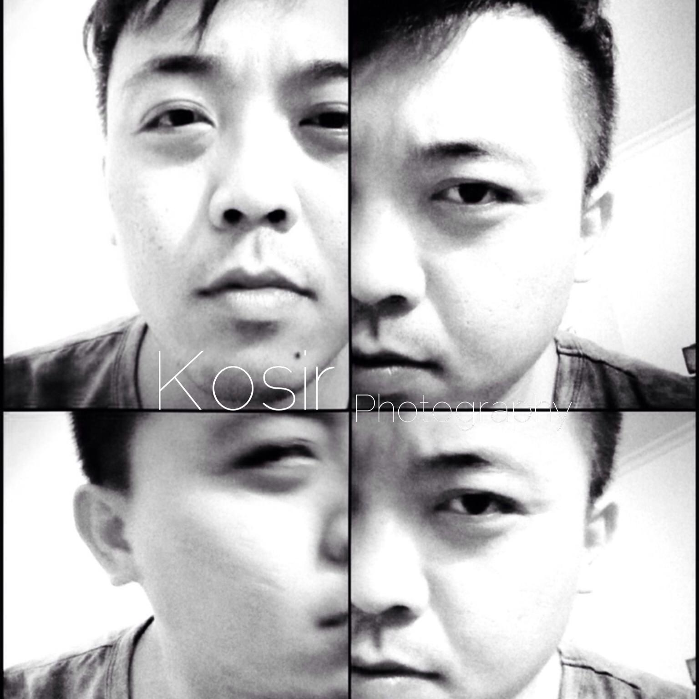
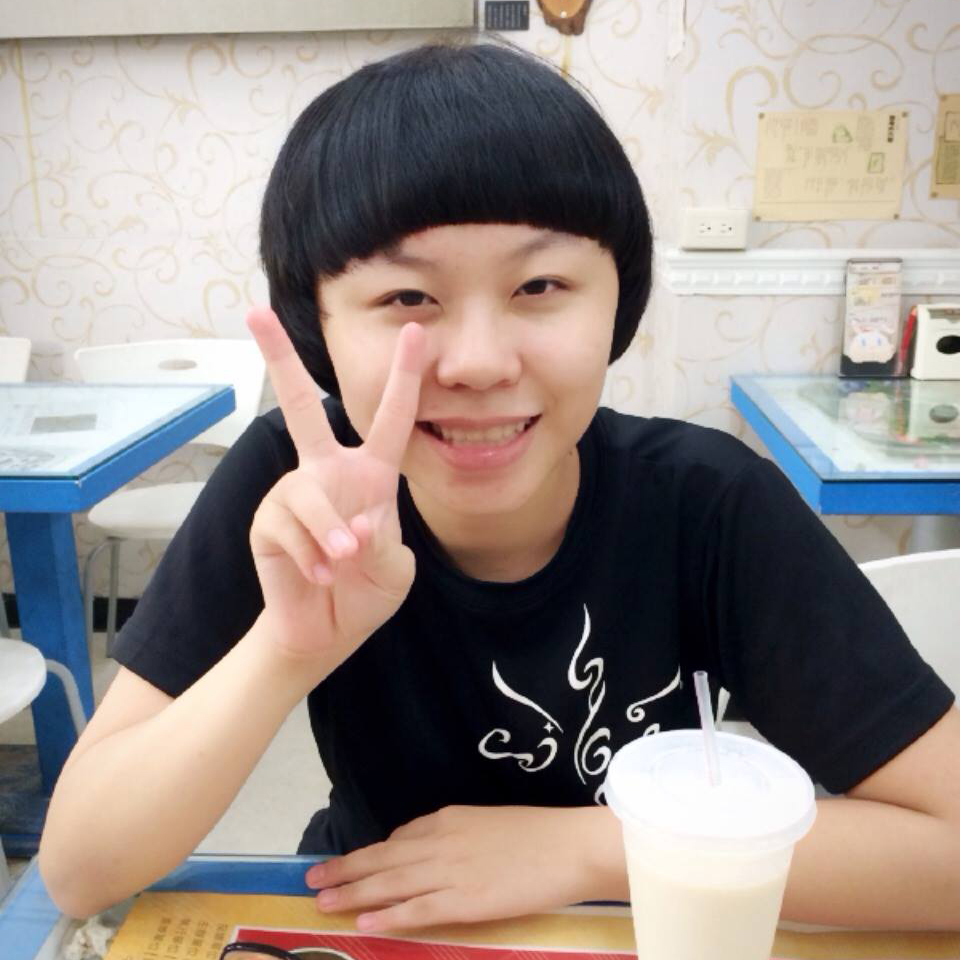

不論你對傳統底片式相機有興趣，亦或是數位相機，都可以來我們社團學習、研究及交流喔！
社團重視基礎拍攝技巧，還有實際外拍體驗，步調輕鬆、內容有趣、沒有壓力，是培養正當休閒與社交的好去處。社團內有傳統相機與數位單眼相機，供給社團教學實際操作還有實際外拍時使用，讓社員有親手玩到專業相機的機會。
漸進式的教學方式，讓我們從最底層的原理開始，從基礎的光圈、快門、景深、曝光量以及構圖，深入探討照片。唯有真正了解這些，才是踏入攝影的最基本的一步，不管是傳統相機、亦或是最新型的數位相機，始終是脫離不了這些元素，因此，做好 基本功夫，將是由拍照進入到攝影的一個轉戾點！
我們採取專題研究的課程方式，滿足各種主題的拍攝需求，我們的主題涵蓋靜物、色溫、花卉、旅行、風景、夜間攝影等等。以不定期的實地外拍，來確實地練習、實習所學會的技巧。藉由上課中與老師、社員們的討論、檢討，分析每張照片，以便追求更優秀的作品。
您可以不用擁有傳統相機，也不用花錢去購買昂貴的器材，或是您只是想要學會更進階的數位相機使用。這些都是沒問題的！只要能夠體會捕捉畫面的快感，那表示您已經踏入攝影的第一步了！與我們一同享受捕捉畫面的感覺吧！一同進入攝影的領域！
社團重視基礎拍攝技巧，還有實際外拍體驗，步調輕鬆、內容有趣、沒有壓力，是培養正當休閒與社交的好去處。社團內有傳統相機與數位單眼相機，供給社團教學實際操作還有實際外拍時使用，讓社員有親手玩到專業相機的機會。
漸進式的教學方式，讓我們從最底層的原理開始，從基礎的光圈、快門、景深、曝光量以及構圖，深入探討照片。唯有真正了解這些，才是踏入攝影的最基本的一步，不管是傳統相機、亦或是最新型的數位相機，始終是脫離不了這些元素，因此，做好 基本功夫，將是由拍照進入到攝影的一個轉戾點！
我們採取專題研究的課程方式，滿足各種主題的拍攝需求，我們的主題涵蓋靜物、色溫、花卉、旅行、風景、夜間攝影等等。以不定期的實地外拍，來確實地練習、實習所學會的技巧。藉由上課中與老師、社員們的討論、檢討，分析每張照片，以便追求更優秀的作品。
您可以不用擁有傳統相機，也不用花錢去購買昂貴的器材，或是您只是想要學會更進階的數位相機使用。這些都是沒問題的！只要能夠體會捕捉畫面的快感，那表示您已經踏入攝影的第一步了！與我們一同享受捕捉畫面的感覺吧！一同進入攝影的領域！

Kosir 蘇活婚禮攝影師
社長
廖子慶（鴨子）
風景

副社長
蔡佳蓉（AL）
生活小品
總務
蔡秉諺（Crifton）
生活攝影（特愛追焦）
器材
尤仕承
生態
文書
王俐文
生活小品
